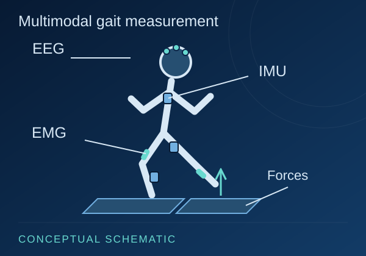

Biomechanics and modeling
- Gait analysis
- OpenSim
- Subject-specific musculoskeletal modeling
- Inverse kinematics and dynamics
- Joint-load and muscle-force estimation
- Sensitivity analysis
Data & Methods
A practical research toolkit spanning multimodal gait acquisition, musculoskeletal simulation, numerical analysis and AI-informed biomechanical workflows.
Public dataset
The dataset combines brain activity, muscle activity, kinematics and ground-force measurements collected during treadmill walking.

I contributed to participant instrumentation and synchronized treadmill-gait data collection at the Khalifa University Gait Laboratory.
Walking speeds: 0.5, 0.75 and 1.0 m/s.
Measurements: 19-channel EEG, Delsys surface EMG from 12 lower-limb muscles, 17 Xsens IMUs and bilateral Bertec force plates.
EEG, EMG and IMU acquisition used a trigger protocol. Force-plate recording was manually initiated near-synchronously; the diagram does not imply shared hardware synchronization across all four modalities.
Open dataset DOITechnical methods
Methods are grouped by the part of the research workflow they support.
Human-subject research
I completed the NIDA Clinical Trials Network Good Clinical Practice course in January 2026. The training covers institutional review boards, informed consent, confidentiality, participant safety, quality assurance, research protocols, documentation, misconduct, recruitment and research responsibilities.
Certificate validity: January 2026 to January 2029.
Explore current doctoral projects, clinical studies and earlier engineering work.